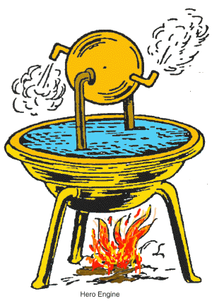
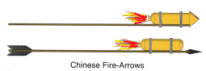
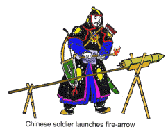
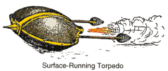
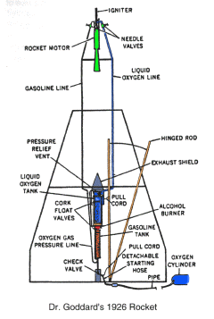
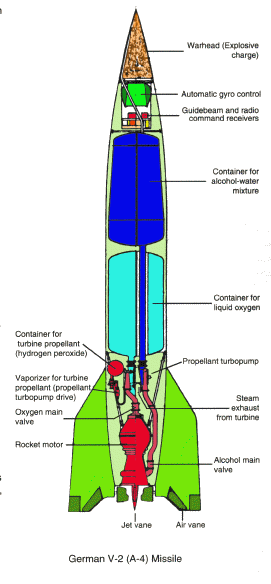
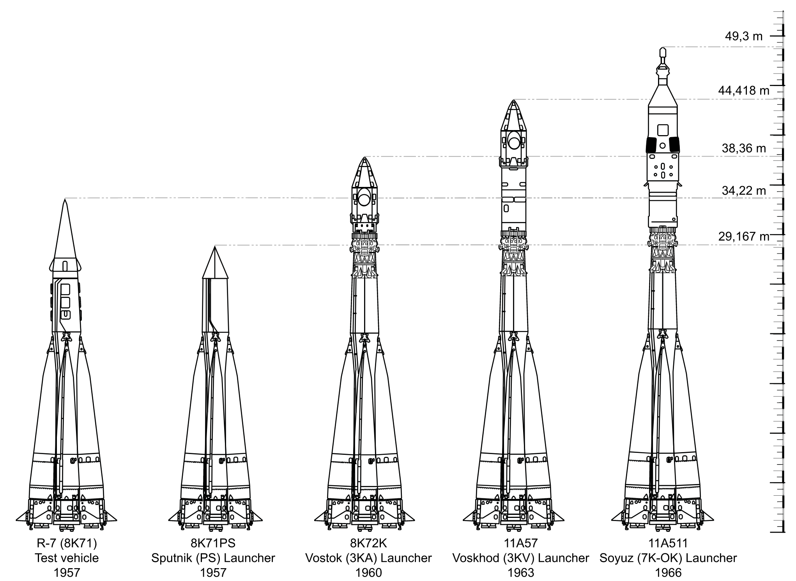
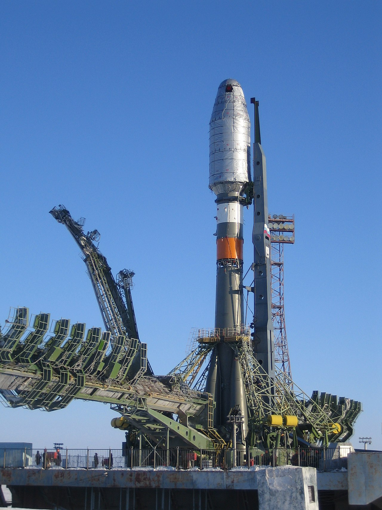
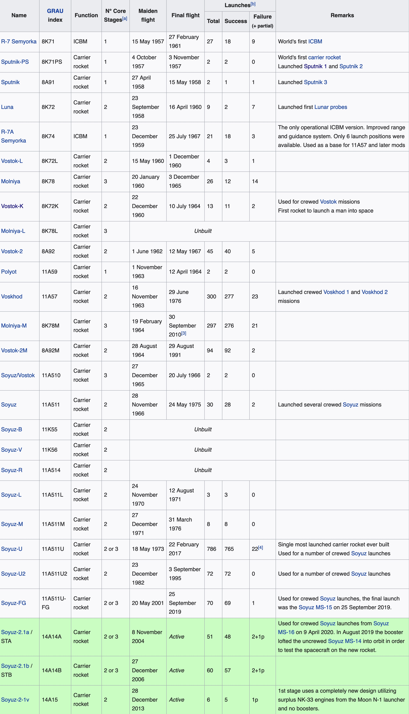
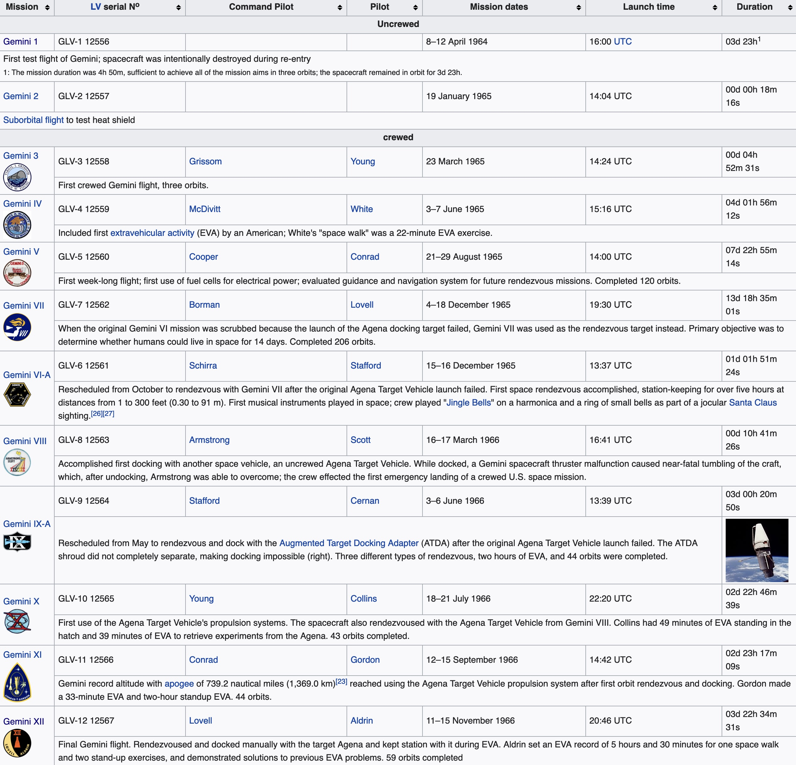

First uses of Principles
One of the first devices to successfully employ the principles essential to rocket flight was a wooden bird.
The writings of Aulus Gellius, a Roman, tell somewhere around the year 400 B.C., a Greek named Archytas mystified and amused the citizens of Tarentum, now part of southern Italy by flying a pigeon made of wood.
Escaping steam propelled the bird suspended on wires. The pigeon used the action-reaction principle, which was not stated as a scientific law until the 17th century.
About three hundred years after the pigeon, another Greek, Hero of Alexandria, invented a similar rocket-like device called an aeolipile. It too used steam as a propulsive gas.
Hero mounted a sphere on top of a water kettle. A fire below the kettle turned the water into steam, and the gas traveled through pipes to the sphere.
Two
L-shaped tubes on opposite sides of the sphere allowed the gas to escape, and in doing so gave a thrust to the sphere that caused it to rotate.

Origin of the Rocket
Just when the first true rockets appeared is unclear.
Stories of early rocket like devices appear sporadically through the historical records of various cultures.
Perhaps the first true rockets were accidents.
In the first century A.D., the Chinese reportedly had a simple form of gunpowder made from saltpeter, sulfur, and charcoal dust.
To create explosions during religous festivals, they filled bamboo tubes with a mixture and tossed them into fires.
Perhaps some of those tubes failed to explode and instead skittered out of the fires, propelled by the gases and sparks produced by the burning gunpowder.
The Chinese began experimenting with the gunpowder-filled tubes.
At some point, they attached bamboo tubes to arrows and launched them with bows.
They discovered that these gunpowder tubes could launch themselves just by the power produced from the escaping gas. The true rocket was born.

The first use of true rockets was reportedly in 1232.
At this time, the Chinese and the Mongols were at war with each other.
During the battle of Kai-Keng, the Chinese repelled the Mongol invaders by a barrage of "arrows of flying fire."
These fire-arrows were a simple form of a solid-propellant rocket.
A tube, capped at one end, contained gunpowder.
The other end was left open and the tube was attached to a long stick.
When the powder was ignited, the rapid burning of the powder produced fire, smoke, and gas that escaped out the open end and produced a thrust.
The stick acted as a simple guidance system that kept the rocket headed in one general direction as it flew through the air.
It is not clear how effective these arrows of flying fire were as weapons of destruction, but their psychological effects on the Mongols must have been formidable.

The Rocket in Europe
The Mongols then produced rockets of their own and may have been responsible for the spread of rockets to Europe.
All through the 13th to the 15th centuries there were reports of many rocket experiments:
- In England, a monk named Roger Bacon worked on improved forms of gunpowder that greatly increased the range of rockets.
- In France, Jean Froissart found that more accurate flights could be achieved by launching rockets through tubes.
Froissart's idea was the forerunner of the modern bazooka.
- Joanes de Fontana of Italy designed a surface-running rocket-powered torpedo for setting enemy ships on fire.

Origin of the Multistage Rocket
By the 16th century rockets are weapons of war, though they were still used for fireworks displays.
A German fireworks maker, Johann Schmidlap, invented the "step rocket," a multi-staged vehicle for lifting fireworks to higher altitudes.
A large sky rocket (first stage) carried a smaller sky rocket (second stage).
When the large rocket burned out, the smaller one continued to a higher altitude before showering the sky with glowing cinders.
Schmidlap's idea is basic to all rockets today that go to space.
Rocket's First Use in Transport
There is an interesting old Chinese legend that reported the use of rockets as a means of transportation.
With the help of many assistants, a Chinese official named Wan-Hu assembled a rocket-powered flying chair.
Attached to the chair were two large kites, and fixed to the kites were forty-seven fire-arrow rockets.
On the day of the flight, Wan-Hu sat himself on the chair and gave the command to light the rockets.
Forty-seven rocket assistants, each armed with torches, rushed forward to light the fuses.
There was a tremendous roar accompanied by billowing clouds of smoke.
When the smoke cleared, Wan-Hu and his flying chair were gone.
No one knows for sure what happened to Wan-Hu, but it is probable that if the event really did take place, Wan-Hu and his chair were blown to pieces.
Rocketry Becomes a Science
During the late 17th century, the scientific foundations for modern rocketry were laid by English scientist, Sir Isaac Newton.
Newton organized his understanding of physical motion into three scientific laws.
The laws explain how rockets work and why they are able to work in the vacuum of outer space.
Newton's laws soon began to have a practical impact on the design of rockets.
About 1720, a Dutch professor, Willem Gravesande, built model cars propelled by jets of steam.
Rocket experimenters in Germany and Russia began working with rockets with a mass of more than 45 kilograms.
Some of these rockets were so powerful that their escaping exhaust flames bored deep holes in the ground even before lift-off.
Rockets in Wartime, Again
During the end of the 18th century and early into the 19th, rockets experienced a brief revival as a weapon of war.
The success of Indian rocket barrages against the British in 1792 and again in 1799 caught the interest of an artillery expert, Colonel William Congreve.
Congreve set out to design rockets for use by the British military. The Congreve rockets were highly successful in battle.
Used by British ships to pound Fort McHenry in the War of 1812, they inspired Francis Scott Key to write "the rockets' red glare," words in his poem that later became The Star Spangled Banner.
The accuracy of rockets still had not improved much. The devastating nature of war rockets was not their accuracy or power, but their numbers.
During a typical siege, thousands of them might be fired at the enemy.
An Englishman, William Hale, developed a technique called spin stabilization.
In this method, the escaping exhaust gases struck small vanes at the bottom of the rocket, causing it to spin much as a bullet does in flight. Variations of the principle are still used today.
Rockets continued to be used with success in battles all over the European continent.
However, in a war with Prussia, the Austrian rocket brigades met their match against newly designed artillery pieces.
They were far more effective weapons of war than the best rockets.
Once again, rockets were relegated to peacetime uses.
Origin of the Liquid-Propellant Rocket
In 1898, a Russian schoolteacher, Konstantin Tsiolkovsky, proposed the idea of space exploration by rocket.
Tsiolkovsky suggested the use of liquid propellants for rockets in order to achieve greater range.
Tsiolkovsky stated that the speed and range of a rocket were limited only by the exhaust velocity of escaping gases.
For his ideas, careful research, and great vision, Tsiolkovsky has been called the father of modern astronautics.
In the early 20th century, an American, Robert H. Goddard, conducted practical experiments in rocketry.
He published a pamphlet in 1919 entitled A Method of Reaching Extreme Altitudes. It was a mathematical analysis of what is today called the meteorological sounding rocket.
While working on solid-propellant rockets, Goddard became convinced that a rocket could be propelled better by liquid fuel.
No one had ever built a successful liquid-propellant rocket before.
It was a much more difficult task than building solid-propellant rockets.
Goddard achieved the first successful flight with a liquid-propellant rocket on March 16, 1926.
Fueled by liquid oxygen and gasoline, the rocket flew for only two and a half seconds, climbed 12.5 meters, and landed 56 meters away in a cabbage patch.

Goddard's experiments in liquid-propellant rockets continued for many years.
His rockets became bigger and flew higher.
He developed a gyroscope system for flight control and a payload compartment for scientific instruments.
Parachute recovery systems were employed to return rockets and instruments safely.
For his achievements, has been called the father of modern rocketry.
Popularisation of Rockets
Hermann Oberth published a book in 1923 about rocket travel into outer space.
Because of them, many small rocket societies sprang up around the world.
Rockets in World War 2
The formation of a society, the Verein fur Raumschiffahrt (Society for Space Travel), led to the development of the V-2 rocket.
The V-2 rocket (called the A-4 in Germany) was used against London during World War 2.

In 1937, German engineers and scientists assembled in Peenemunde on the shores of the Baltic Sea.
There, the most advanced rocket of its time would be built and flown under the directorship of Wernher von Braun.
The V-2 rocket was small by comparison to today's rockets. It achieved its great thrust by burning a mixture of liquid oxygen and alcohol at a rate of about 1 ton every seven seconds.
Once launched, the V-2 was a formidable weapon that could devastate whole city blocks.
The R-7 Rocket Family

The R-7 family of rockets (Russian: P-7) is a series of rockets, derived from the Soviet R-7 Semyorka, the world's first ICBM.
More R-7 rockets have been launched than any other family of large rockets.
When Soviet nuclear warheads became lighter, the R-7 turned out to be impractical as a ballistic missile, and there were no other heavy payloads with a military application.
However, long-term development has made their purpose shift primarily to launching satellites, probes, manned and unmanned spacecraft, and other non-threatening payloads.
The R-7 family consists of both missiles and orbital carrier rockets. Derivatives include the Vostok, Voskhod and Soyuz rockets, which as of 2022 have been used for all Soviet, and later Russian human spaceflights.
The type has a unique configuration where four break-away liquid-fueled engines surround a central core. The core acts as, in effect, a "second stage" after the other four engines are jettisoned. These rockets are expendable.
Later modifications were standardised around the Soyuz design. The Soyuz-2 is currently in use.

Soyuz-2.1a rocket
Summary of Variants:

Project Mercury

Launch vehicles: 1. Mercury-Atlas (orbital flights). 2. Mercury-Redstone (suborbital flights). 3. Little Joe (uncrewed tests)
Project Mercury was the first human spaceflight program of the United States, running from 1958 through 1963. An early highlight of the Space Race, its goal was to put a man into Earth orbit and return him safely.
NASA conducted 20 uncrewed developmental flights (some using animals), and six successful flights by astronauts.
The Soviet Union put the first human, cosmonaut Yuri Gagarin, into a single orbit aboard Vostok 1 on April 12, 1961.
Shortly after this, on May 5, the US launched its first astronaut, Alan Shepard, on a suborbital flight.
Soviet Gherman Titov followed with a day-long orbital flight in August 1961.
The US reached its orbital goal on February 20, 1962, when John Glenn made three orbits around the Earth.
When Mercury ended in May 1963, both nations had sent six people into space, but the Soviets led the US in total time spent in space.
Project Gemini

Project Gemini was NASA's second human spaceflight program.
Gemini started in 1961 and concluded in 1966.
The Gemini spacecraft carried a two-astronaut crew.
10 Gemini crews and 16 individual astronauts flew low Earth orbit (LEO) missions during 1965 and 1966.
Gemini's objective was the development of space travel techniques to support the Apollo mission to land astronauts on the Moon.
In doing so, it allowed the United States to catch up and overcome the lead in human spaceflight capability the Soviet Union had obtained in the early years of the Space Race, by demonstrating: mission endurance up to just under 14 days, longer than the eight days required for a round trip to the Moon; methods of performing extra-vehicular activity (EVA) without tiring; and the orbital maneuvers necessary to achieve rendezvous and docking with another spacecraft.
This left Apollo free to pursue its prime mission without spending time developing these techniques.

Apollo Program

The Apollo program was the third United States human spaceflight program carried out by NASA, which succeeded in preparing and landing the first humans on the Moon from 1968 to 1972.
It was first conceived in 1960 during President Dwight D. Eisenhower's administration as a three-person spacecraft to follow the one-person Project Mercury, which put the first Americans in space.
Apollo was later dedicated to President John F. Kennedy's national goal for the 1960s of "landing a man on the Moon and returning him safely to the Earth".
Apollo ran from 1961 to 1972, with the first crewed flight in 1968.
It encountered a major setback in 1967 when an Apollo 1 cabin fire killed the entire crew during a prelaunch test.
After the first successful landing, sufficient flight hardware remained for nine follow-on landings with a plan for extended lunar geological and astrophysical exploration.
Budget cuts forced the cancellation of three of these.
Five of the remaining six missions achieved successful landings, but the Apollo 13 landing was prevented by an oxygen tank explosion in transit to the Moon, crippling the c ommand and service module (CSM).
The crew barely returned to Earth safely by using the lunar module as a "lifeboat" on the return journey.
Apollo used the Saturn family of rockets as launch vehicles, which were also used for an Apollo Applications Program, which consisted of Skylab, a space station that supported three crewed missions in 1973-1974, and the Apollo-Soyuz Test Project, a joint United States-Soviet Union low Earth orbit mission in 1975.
Apollo set several major human spaceflight milestones.
It stands alone in sending crewed missions beyond low Earth orbit.
Apollo 8 was the first crewed spacecraft to orbit another celestial body, and Apollo 11 was the first crewed spacecraft to land humans on one.
Overall the Apollo program returned 382 kg of lunar rocks and soil to Earth, greatly contributing to the understanding of the Moon's composition and geological history.
The program laid the foundation for NASA's subsequent human spaceflight capability, and funded construction of its Johnson Space Center and Kennedy Space Center.
Apollo also spurred advances in many areas of technology incidental to rocketry and human spaceflight, including avionics, telecommunications, and computers.

A Saturn V rocket launches Apollo 11, 1969

Apollo 11 Lunar Lander

Apollo Crew Service Module

Apollo 11 first step

Apollo 15 Lunar Module Pilot James Irwin salutes the U.S. flag
N1

Mockup at the Baikonur Cosmodrome in late 1967
The N1/L3 was a super heavy-lift launch vehicle intended to deliver payloads beyond low Earth orbit.
The N1 was the Soviet counterpart to the U.S. Saturn V and was intended to enable crewed travel to the Moon and beyond.
Its first stage, Block A, remains the most powerful rocket stage ever flown.
However, all four first stages flown failed mid-flight because a lack of static test firings meant that plumbing issues and other adverse characteristics with the large cluster of thirty engines and its complex fuel and oxidizer feeder system were not revealed earlier in development.
The N1-L3 version was designed to compete with the United States Apollo program to land a person on the Moon, using a similar lunar orbit rendezvous method.
The basic N1 launch vehicle had three stages, which were to carry the L3 lunar payload into low Earth orbit with two cosmonauts.
The L3 contained one stage for trans-lunar injection; another stage used for mid-course corrections, lunar orbit insertion, and the first part of the descent to the lunar surface; a single-pilot LK Lander spacecraft; and a two-pilot Soyuz 7K-LOK lunar orbital spacecraft for return to Earth.
The N1-L3 was underfunded and rushed, starting development in October 1965, almost four years after the Saturn V.
The project was badly derailed by the death of its chief designer Sergei Korolev in 1966.
Each of the four attempts to launch an N1 failed, with the second attempt resulting in the vehicle crashing back onto its launch pad shortly after liftoff.
The N1 program was suspended in 1974, and officially canceled in 1976.
All details of the Soviet crewed lunar programs were kept secret until the USSR was nearing collapse in 1989.